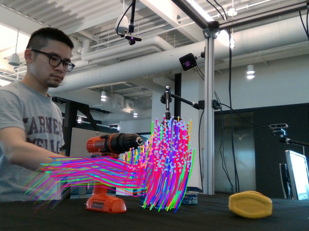

track_camera + track_world);
v2 expands to four videos (scene-only, hand/obj-only, hand/obj+tracks,
world-rotating with frame-0 camera matching RGB input) and uses a proper
world→matplotlib basis so scene up aligns with +Z_mpl.
The offline matplotlib renderer now produces 4RC viser-style motion-track visualizations without any viser / Playwright / browser dependency. Each track has a distinct hue from a uniformly-spaced HSV wheel, and a 10-frame sliding window of per-step segments gives a rainbow ribbon of recent motion. The camera-view MP4 overlays on the raw RGB frame; the world-view MP4 shows the same trails in 3D with a gentle azimuth sweep.
r3_3k_preds.pt) was produced before the 2026-04-22
DexYCB handedness fix (see project_dexycb_handedness_latent_bug.md):
left-hand sequences trained with the wrong GPS latent. The point of this publish
is to show the rendering pipeline, not to attribute model quality to it.
Do not quote L2/chamfer numbers from this page as model evaluation.
Line3DCollection. Gentle azim sweep -60° → 0° across the clip.
40 KiB.
scripts/hoi3r_offline_render.py gained --mode track
(legacy multiframe preserved for back-compat). The port is a direct
translation of the 4RC viser behaviour:
| 4RC viser rule | matplotlib port |
|---|---|
Per-track HSV hue (generate_uniform_colors): one hue per track
ID, full S/V, rainbow spread across tracks, not time. |
hsv_uniform(N): linspace(0,1,N,endpoint=False)
+ mcolors.hsv_to_rgb. One hue per track, broadcast across the
whole 10-frame trail. |
10-frame sliding window: at frame t, render segments for
(j−1 → j), j ∈ [t−9, t]. Shape (N, len_t, 2, 3). |
build_window_lines(per_frame, t, win=10) emits
(N·len_t, 2, 3) flattened into LineCollection
(2D camera view) or Line3DCollection (3D world view). |
| Raw-pixel RGB for the scene background; scene point cloud at current t only. | ax.imshow(rgb_bg) under everything, then pinhole-projected
scene cloud colored by the 4RC reconstructed RGB (no white wash). |
add_line_segments(points, colors, line_width) in one viser call
per frame (fast path). |
One LineCollection per-entity per-frame (hand, object) —
batched, not per-segment ax.plot. |
Conf-weighted random subsample + track-ID decimation (lines[::10])
to keep ~50 % of tracks. |
All hand (128) + object (256) tracks kept — already sparse. Scene-cloud subsample uses FPS to ~1.2 k points (deterministic). |
Matplotlib LineCollection takes per-segment RGBA, so we layer a
linear alpha fade from 0.15 (tail / oldest) to 1.0 (head / current) on top of the
fixed hue. This is NOT in 4RC viser (viser segments are opaque), but it gives
the matplotlib output a readable motion-blur cue that compensates for the lack
of interactive depth.
logs/exp_eval/r3_3k_preds.pt — HOI3R Stage 1 R3 cached
overfit @ 3 k steps. Schema: pred_hand_per_frame
(16, 128, 3), pred_obj_per_frame (16, 256, 3)
in world coordinates, plus matching GT.logs/exp1_4rc_dexycb/20200709-subject-01_20200709_141754_836212060125.npz
— 4RC pristine inference on the same clip (30 frames; we render the
overlapping first 16).20200709_141754 / camera
836212060125.python scripts/hoi3r_offline_render.py \
--scene-npz logs/exp1_4rc_dexycb/20200709-subject-01_20200709_141754_836212060125.npz \
--predictions logs/exp_eval/r3_3k_preds.pt \
--output-dir logs/renderer_redesign_r3_3k \
--mode track --window 10 --track-lw 1.2 \
--scene-track-pts 1200 --scene-point-size 2.2 --scene-alpha 0.9 --fps 10
track_filter_mask
uses a SAM2-based text prompt (e.g. "foreground object") eroded by 3 pixels to
select which pixel-indexed tracks to render. That pipeline needs the original
per-pixel track_multi + conf_track_multi tensors,
which are not present in HOI3R's predictions.pt. Workaround:
our tracks are already semantic (hand = 128 MANO-canonical verts, object = 256
obj-canonical verts); every track is "foreground" by construction, so no mask
is required.
track_conf. We have no per-track confidence; all
tracks are kept. If future HOI3R checkpoints expose per-vertex confidence, drop
it into build_window_lines's keep-mask and it fits the existing
LineCollection path 1-for-1.
_scatter_scene path used alpha=0.85
on a white background. On bright DexYCB frames that washed out dark points
(the user-visible "ghosty RGB" in earlier offline overlays). The track mode
flips this: RGB image underneath, opaque scene scatter over it, so we
no longer fight the background color. Keeping the multiframe path unchanged
preserves back-compat, but the fix pattern ports cleanly if needed.
ssh root@180.184.249.158 -p 20161
cd /mnt/afs/haonan/hoi3r/HOI3R/.worktrees/feat-dcf
git log -1 --format='%H %s' 9a1eb87 # feat(render): port 4RC viser track style...
/mnt/afs/haonan/miniconda3/envs/human3r/bin/python scripts/hoi3r_offline_render.py \
--scene-npz logs/exp1_4rc_dexycb/20200709-subject-01_20200709_141754_836212060125.npz \
--predictions logs/exp_eval/r3_3k_preds.pt \
--output-dir logs/renderer_redesign_r3_3k --mode track
Renderer commit 9a1eb87 on feat/dcf (worktree
/mnt/afs/haonan/hoi3r/HOI3R/.worktrees/feat-dcf). Commit not yet
pushed to GitHub — debug container has no outbound https to github.com; will
be pushed from Mac or by the next ACP job rsync.